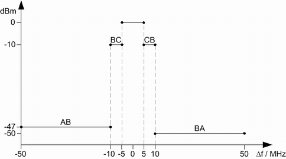

- -53 dBm per MHz for 20 MHz channels
- -56 dBm per MHz for 40 MHz channels
- -59 dBm per MHz for 80, 80+80 MHz and 160 MHz channels
See IEEE 802.11-2012, section 20.3.20.2 for 802.11n, IEEE 802.11ac 2013, section 22.3.18.2 for 802.11ac, and IEEE 802.11ax, section 28.3.18.1 for 802.11ax.
The absolute limits for standards IEEE 802.11n, 802.11ac, and 802.11ax are defined for a resolution bandwidth of 100 kHz. These values are used as the default "Abs 11n Limit", "Abs 11ac Limit", and "Abs 11ax Limit" values at the R&S CMW.
See Figure "Default transmit spectrum masks for OFDM".
Channel bandwidth | "Absolute 11n/ 11ac/ 11ax Limit" |
|---|---|
20 MHz | -63 dBm |
40 MHz | -66 dBm |
80 MHz | -69 dBm |
160 MHz | -69 dBm |
ETSI EN 302 571 V1.1.1 (2008-09) imposes absolute emission limits for intelligent transport systems (ITS), operating in the 5.85 GHz to 5.925 GHz band, such as IEEE 802.11p. The limits are specified in section 6.4.2.2 and are summarized in the following table. Linear interpolation is performed according to Figure "Regulatory IEEE transmit spectrum mask".
These values are used as preset "Abs Level"s (see Figure "Transmit spectrum masks for 802.11p").
Point | Frequency offset | Limit in dBm (per 1 MHz) | |
|---|---|---|---|
Channel BW 10 MHz | Channel BW 20 MHz | ||
P1 | Δf1 = 1.5 BW | -27 dBm | --- |
P2 | Δf2 = BW | -17 dBm | --- |
P3 | Δf3 = 0.55 BW | -9 dBm | -9 dBm |
P4 | Δf4 = 0.5 BW | -3 dBm | -3 dBm |
P5 | Δf5 = 0.45 BW | 23 dBm | 23 dBm |
ARIB STD-T109 also defines absolute emission limits for IEEE 802.11p. They apply only for 10 MHz bandwidth. The limits are summarized in the following table. The ARIB mask is not configurable and only available on an R&S CMW100/CMW with MUA.
Range | Frequency offset | Limit in dBm (per 100 kHz) |
|---|---|---|
AB | -50 MHz to -10 MHz | -47 dBm |
BC | -10 MHz to -5 MHz | -10 dBm |
CB | 5 MHz to 10 MHz | -10 dBm |
BA | 10 MHz to 50 MHz | -50 dBm |
